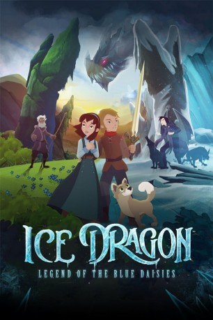

#11442 Der Eisdrache und die Legende der blauen Blumen
Alternativ: Ice Dragon: Legend of the Blue Daisies (Englischer Titel)
 
 IMDB-Wertung: 4.9 / 10
IMDB-Wertung: 4.9 / 10  Metascore: 0
Metascore: 0 
Als die blauen Gänseblümchen auf den Wiesen ihres Dorfes langsam verschwinden, deutet die kleine Melody das als äußerst bedrohliches Zeichen. Gemeinsam mit ihrem Großvater versucht sie, die anderen im Dorf zu warnen, dass eine große Gefahr im Anmarsch ist. Denn Melody ist überzeugt, dass hinter dem Verschwinden der Eisdrache steckt, eine alte mythische Figur. Sein Ziel ist es, den Menschen Freude und Zuversicht zu nehmen und die Welt im ewigen Winter versinken zu lassen. Zum Glück steht Melody ihr bester Freund Leif zur Seite. Doch werden sie es schaffen, die skeptischen Dorfbewohner zu überzeugen, bevor es zu spät ist?
Jahr: 2018
Dauer: 70 Minuten
FSK: 6
Land: Kanada Studio: New KSMTonspuren: DTS - ,
Untertitel: Deutsch,
Auflösung: 1080p (1920x1080) Größe: 5294 MB
Genre: Abenteuer, Fantasy, Animation/Trick, Familie
Regisseur: Bruce W. Stacey
Drehbuch: Bruce W. Stacey
Soundtrack: Roy Oommen, Ian Tanner
Darsteller:
- Rheal Rees als Melody
- Justin Dubé als Leif
- Bill Bray als Nicholai
- Mark Underdown als Michael
- Bruce Wallace als Dracon
Datei: X:\Kinder Filme (A-F)\Eisdrache und die Legende der blauen Blumen, Der (2018, FSK6, 1920x1080).mkv seit 06.07.2019
Festplatte: Kinder-Filme+Trick
 Es gibt insgesamt 68 Filme in der Gruppe 'Kinder Filme (A-F)'
Es gibt insgesamt 68 Filme in der Gruppe 'Kinder Filme (A-F)'